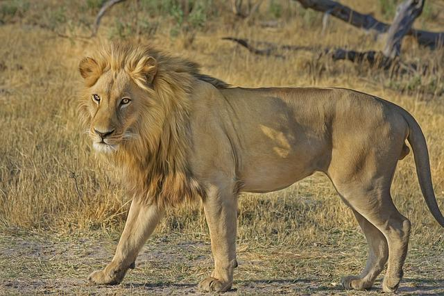

Example Blog Post
August 10, 2022 by PP
Here is the quote from Wikipedia website:
Lion (Panthera leo) is a large cat of the genus Panthera native to Africa and India. It has a muscular, broad-chested body, short, rounded head, round ears, and a hairy tuft at the end of its tail. It is sexually dimorphic; adult male lions are larger than females and have a prominent mane. It is a social species, forming groups called prides.
Heading
The lion inhabits grasslands, savannas and shrublands. It is usually more diurnal than other wild cats, but when persecuted, it adapts to being active at night and at twilight. During the Neolithic period, the lion ranged throughout Africa, Southeast Europe, the Caucasus, Western Asia and northern parts of India, but it has been reduced to fragmented populations in sub-Saharan Africa and one population in western India.
Sub-heading
It has been listed as Vulnerable on the IUCN Red List since 1996 because populations in African countries have declined by about 43% since the early 1990s. Lion populations are untenable outside designated protected areas. Although the cause of the decline is not fully understood, habitat loss and conflicts with humans are the greatest causes for concern.
Sub-heading
One of the most widely recognised animal symbols in human culture, the lion has been extensively depicted in sculptures and paintings, on national flags, and in contemporary films and literature. Lions have been kept in menageries since the time of the Roman Empire and have been a key species sought for exhibition in zoological gardens across the world since the late 18th century. Cultural depictions of lions were prominent in Ancient Egypt, and depictions have occurred in virtually all ancient and medieval cultures in the lion's historic and current range.
- Kingdom: Animalia
- Class: Mammalia
- Family: Felidae
- Species: P. leo

Male lion in Okonjima, Namibia